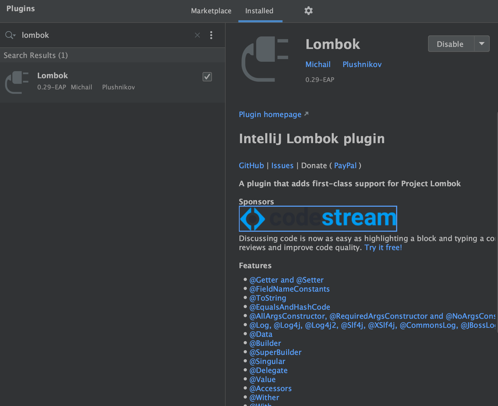
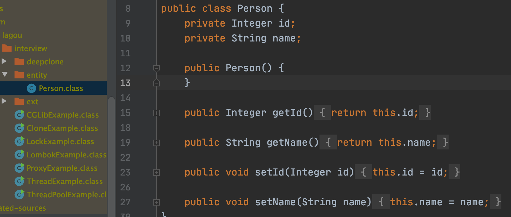
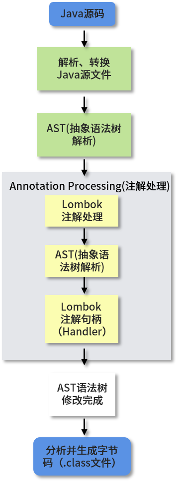

90%的程序员都直接或者间接的使用过动态代理，无论是日志框架或Spring框架，它们都包含了动态代理的实现代码。动态代理是程序在运行期间动态构建代理对象和动态调用代理方法的一种机制。
我们本课时的面试题是，如何实现动态代理？JDK Proxy和CGLib有什么区别？
典型回答
动态代理的常用实现方式是反射。反射机制是指程序在运行期间可以访问、检测和修改其本身状态或行为的一种能力，使用反射我们可以调用任意一个类对象，以及类对象中包含的属性及方法。
但动态代理不止有反射一种实现方式，例如，动态代理可以通过CGLib来实现，而CGLib是基于ASM（一个Java字节码操作框架）而非反射实现的。简单来说，动态代理是一种行为方式，而反射或ASM只是它的一种实现手段而已。
JDK Proxy和CGLib的区别主要体现在以下几个方面：
- JDK Proxy是Java 语言自带的功能，无需通过加载第三方类实现；
- Java对JDKProxy提供了稳定的支持，并且会持续的升级和更新JDK Proxy，例如Java8版本中的JDK Proxy性能相比于之前版本提升了很多；
- JDK Proxy 是通过拦截器加反射的方式实现的；
- JDK Proxy 只能代理继承接口的类；
- JDK Proxy 实现和调用起来比较简单；
- CGLib是第三方提供的工具，基于ASM实现的，性能比较高；
- CGLib无需通过接口来实现，它是通过实现子类的方式来完成调用的。
考点分析
本课时考察的是你对反射、动态代理及CGLib的了解，很多人经常会把反射和动态代理划为等号，但从严格意义上来说，这种想法是不正确的，真正能搞懂它们之间的关系，也体现了你扎实Java的基本功。和这个问题相关的知识点，还有以下几个：
- 你对JDKProxy和CGLib的掌握程度。
- Lombok是通过反射实现的吗？
- 动态代理和静态代理有什么区别？
- 动态代理的使用场景有哪些？
- Spring中的动态代理是通过什么方式实现的？
知识扩展
1.JDK Proxy 和CGLib的使用及代码分析
JDK Proxy 动态代理实现
JDK Proxy 动态代理的实现无需引用第三方类，只需要实现InvocationHandler接口，重写invoke0方法即可，整个实现代码如下所示：
1 | import java.lang.reflect.InvocationHandler; |
以上程序的执行结果是：
1 | 动态代理之前的业务处理. |
可以看出JDK Proxy 实现动态代理的核心是实现Invocation 接口，我们查看Invocation的源码，会发现里面其实只有一个invoke()方法，源码如下：
1 | public interface InvocationHandler { |
这是因为在动态代理中有一个重要的角色也就是代理器，它用于统一管理被代理的对象，显然
InvocationHandler 就是这个代理器，而invoke()方法则是触发代理的执行方法，我们通过实现
Invocation 接口来拥有动态代理的能力。
CGLib的实现
在使用CGLib之前，我们要先在项目中引入CGLib框架，在pom.xml中添加如下配置：
1 | <!-- https://mvnrepository.com/artifact/cglib/cglib --> |
CGLib 实现代码如下：
1 | package com.lagou.interview; |
以上程序的执行结果是：
1 | 方法调用前业务处理. |
可以看出CGLib和JDK Proxy的实现代码比较类似，都是通过实现代理器的接口，再调用某一个方法完成动态代理的，唯一不同的是，CGLib在初始化被代理类时，是通过Enhancer 对象把代理对象设置为被代理类的子类来实现动态代理的。因此被代理类不能被关键字final修饰，如果被final修饰，再使用Enhancer设置父类时会报错，动态代理的构建会失败。
2.Lombok 原理分析
在开始讲Lombok的原理之前，我们先来简单地介绍一下Lombok，它属于Java的一个热门工具类，使用它可以有效的解决代码工程中那些繁琐又重复的代码，如Setter、Getter、toString、
equals和hashCode等等，向这种方法都可以使用Lombok 注解来完成。
例如，我们使用比较多的Setter和Getter方法，在没有使用Lombok之前，代码是这样的：
1 | public class Person { |
在使用 Lombok 之后，代码是这样的：
1 |
|
可以看出Lombok 让代码简单和优雅了很多。
小贴士：如果在项目中使用了Lombok的Getter和Setter 注解，那么想要在编码阶段成功调用对象的set或get方法，我们需要在IDE中安装Lombok 插件才行，比如ldea的插件如下图所示：

接下来讲讲Lombok的原理。
Lombok 的实现和反射没有任何关系，前面我们说了反射是程序在运行期的一种自省（introspect）
能力，而Lombok的实现是在编译期就完成了，为什么这么说呢？
回到我们刚才Setter/Getter的方法，当我们打开Person的编译类就会发现，使用了Lombok的
@Data注解后的源码竟然是这样的：

可以看出Lombok是在编译期就为我们生成了对应的字节码。
其实Lombok 是基于Java 1.6实现的JSR269：Pluggable Annotation Processing APl来实现的，也就是通过编译期自定义注解处理器来实现的，它的执行步骤如下：

从流程图中可以看出，在编译期阶段，当Java 源码被抽象成语法树（AST）之后，Lombok会根据自己的注解处理器动态修改AST，增加新的代码（节点），在这一切执行之后就生成了最终的字节码（.class）文件，这就是Lombok的执行原理。
3.动态代理知识点扩充
当面试官问动态代理的时候，经常会问到它和静态代理的区别？静态代理其实就是事先写好代理类，可以手工编写也可以使用工具生成，但它的缺点是每个业务类都要对应一个代理类，特别不灵活也不方便，于是就有了动态代理。
动态代理的常见使用场景有RPC框架的封装、AOP（面向切面编程）的实现、JDBC的连接等。
Spring 框架中同时使用了两种动态代理JDK Proxy和CGLib，当Bean 实现了接口时，Spring就会使用JDK Proxy，在没有实现接口时就会使用CGLib，我们也可以在配置中指定强制使用CGLib，只需要在Spring 配置中添加<aop:aspectj-autoproxy proxy-target-class=”true”/>即可。
小结
本课时我们介绍了JDK Proxy和CGLib的区别，JDK Proxy是Java语言内置的动态代理，必须要通过实现接口的方式来代理相关的类，而CGLib是第三方提供的基于ASM的高效动态代理类，它通过实现被代理类的子类来实现动态代理的功能，因此被代理的类不能使用final修饰。
除了JDKProxy和CGLib之外，我们还讲了Java中常用的工具类Lombok的实现原理，它其实和反射是没有任何关系的；最后讲了动态代理的使用场景以及Spring中动态代理的实现方式，希望本文可以帮助到你。